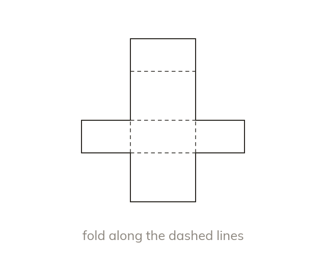
Unfolding a solid
A net is the flat shape that folds up to form a solid. A cuboid's net has six rectangles, in three identical pairs.
Every cardboard box starts as a flat sheet. Today you draw solids on isometric paper, sketch the net of a cuboid, and find how much card it needs: its surface area.
Work down the page at your own pace. Write every answer in your book first, then click to check it.
Read each card, then follow the worked examples one step at a time.

A net is the flat shape that folds up to form a solid. A cuboid's net has six rectangles, in three identical pairs.
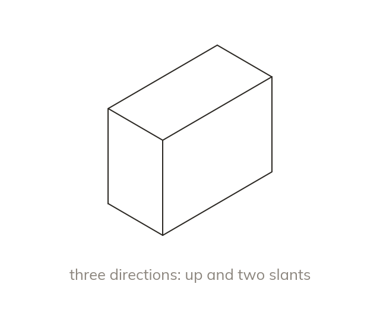
On isometric paper the upright edges stay vertical. The lengths and widths follow the two slanted directions of the grid.
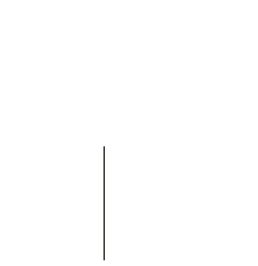
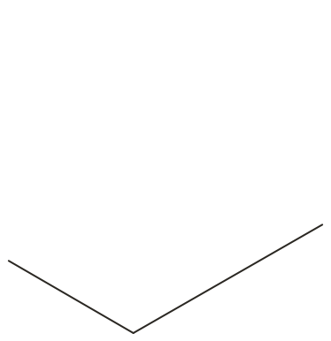
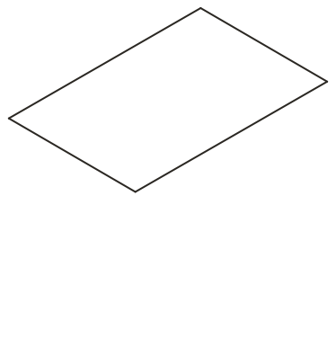
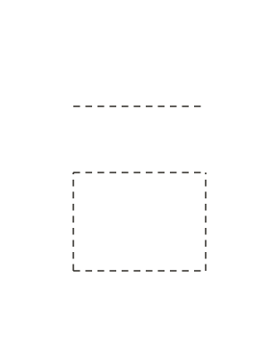
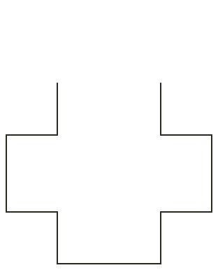
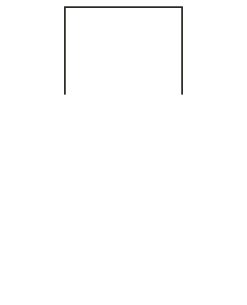
Pick an answer. If it's wrong, the feedback tells you which mistake it was.
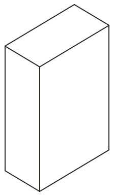
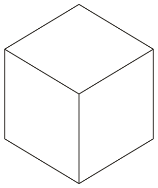
Read each card, then follow the worked examples one step at a time.
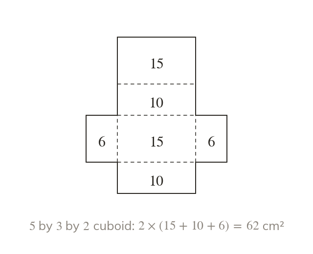
Surface area is the total area of all the faces. A cuboid has three pairs of identical faces. So its surface area is 2(lw + lh + wh).
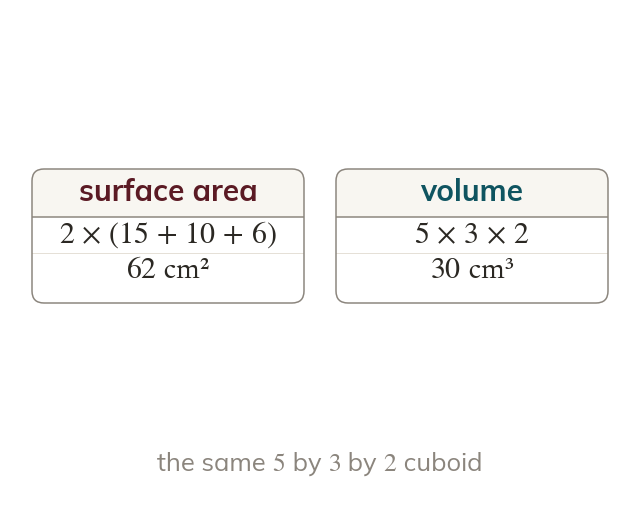
Surface area measures the card on the outside, in square units. Volume measures the space inside, in cubic units.
Pick an answer. If it's wrong, the feedback tells you which mistake it was.
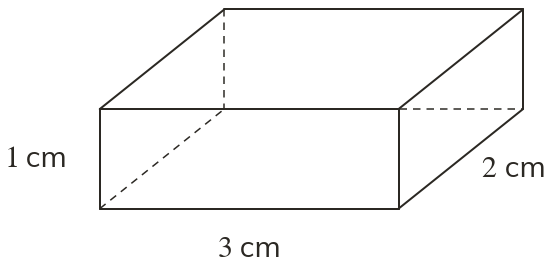
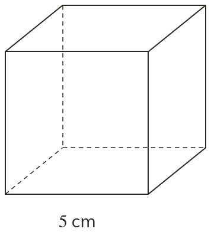
Log in, then search for a code to practise that skill.
Videos, worksheets and more on each part of this lesson.